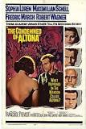

Жан-Поль Шарль Емар Сартр (фр. Jean-Paul Charles Aymard Sartre; 21 червня 1905, Париж — 15 квітня 1980) — французький філософ, драматург, письменник.
Сартр був одним із найвідоміших і найвпливовіших мислителів свого часу.
У творах Сартра поєднуються літературні і філософські погляди.
У своїх ранніх філософських працях він зосереджується на емоціях, уяві та природі особистості.
Жан-Поль Сартр народився в Парижі і був єдиною дитиною в сім'ї. Його батько Жан-Батист Сартр, офіцер військово-морських сил Франції, мати — Анна-Марія Швейцер. По материнській лінії Жан-Поль був двоюрідним племінником Альберта Швейцера. Жану-Полю було лише 15 місяців, коли у нього помер батько. Родина перебралася до рідної домівки в Медон.
Освіту Сартр отримав у ліцеї Ла-Рошель, закінчив Вищу нормальну школу (фр. Ecole normale superieure) у Парижі з дисертацією з філософії, стажувався у Французькому інституті в Берліні (1934). Викладав філософію в різних ліцеях Франції (1929–1939 і 1941–1944); з 1944 року цілком присвятив себе літературній праці. Ще в студентські роки познайомився з Сімоною де Бовуар, що стала не просто супутницею його життя, але ще й автором-однодумцем.
Жан-Поль Сартр та Симона де Бовуар
У 1929 році він закінчив Вищу нормальну школу й упродовж 1941–1945 років викладав у різних ліцеях (йому довелося зробити короткочасну перерву у зв'язку із службою в Збройних силах і перебуванням у військовому полоні).
Разом з Сімоною де Бовуар і Морісом Мерло-Понті він заснував журнал «Нові часи». Виступав як прихильник миру на Віденському конгресі народів в 1952 році, в 1953 році був обраний членом Світової ради миру.
Журнал "Нові Часи" за 1949 р. №49
У 1956 році Сартр і редакція журналу «Нові часи» дистанціювалися (на відміну від Камю) від прийняття ідеї французького Алжиру і підтримали прагнення до незалежності алжирського народу. Сартр виступає проти катувань, захищає свободу народів визначати свою долю, аналізує насильство як гангрену схожу з колоніалізмом.
Після неодноразових погроз французьких націоналістів ними була двічі підірвана його квартира в центрі Парижа; редакцію «Нових часів» бойовики-націоналісти захоплювали п'ять разів.
Сартр, як і багато представників інтелігенції країн третього світу, активно надавав підтримку кубинській революції 1959 року. У червні 1960 він написав у Франції 16 статей, під назвою «Ураган на цукор». У цей час він співпрацював з кубинським новинним агентством «Пренса Латіна»[en]. Але потім стався розрив з Кастро, у 1971 році через «справи Паділья», коли кубинський поет Герберто Паділья[en] був поміщений у в'язницю за критику режиму Кастро.
Жан-Поль Сартр та Симона де Бовуар на зустрічі з Ернесто Гевара. Гавана, Куба. 1960 р.
Сартр взяв активну участь у Трибуналі Рассела з розслідування військових злочинів, скоєних у В'єтнамі. У 1967 році Міжнародний трибунал з розслідування військових злочинів провів два своїх засідання — у Стокгольмі і в Роськилде, де Сартр виголосив свою гучну промову про геноцид, в тому числі в французькому Алжирі.
Жан-Поль Сартр. Міжнародний Трибунал Рассела.
Сартр був учасником революції у Франції 1968 (можна навіть сказати, що Сартр став символом революції: бунтівні студенти, захопивши Сорбонну, впустили всередину одного тільки Сартра), в повоєнні роки — численних демократичних, маоістських рухів і організацій. Брав участь у протестах проти Алжирської війни, придушення Угорського повстання 1956, В'єтнамської війни, проти вторгнення американських військ на Кубу, проти введення радянських військ до Праги, проти придушення інакомислення в СРСР. Протягом життя його політичні позиції досить сильно коливалися, але завжди залишалися лівими, і Сартр завжди відстоював права знедоленої людини, того самого приниженого «Самоучки», якщо цитувати роман «Нудота».
Жан-Поль Сартр перед студентами Сорбони 22 травня 1968 р.
Під час чергового протесту було затримано Ж.-П. Сартра, що викликало обурення студентства. Коли про це дізнався Шарль де Голль, то він наказав випустити Сартра, сказавши:
«У Франції Вольтерів не саджають».
Сартр сам оповідає про своє дитинство у написаних наприкінці життя спогадах («Слова»), вкрай критично й іронічно. Немає нічого сентиментального у споминах про матір і дідуся, хоча видно, що його, єдину дитину в непогано влаштованій буржуазній сім'ї, сирітку (батько рано помер), всі шалено любили. Малий Жан-Поль виріс хлопчиком вкрай пещеним, зіпсованим надміром піклування, але якийсь внутрішній опір зробив його змалку гіперкритичним до далеких і близьких, змушував гостро відчувати фальш навіть там, де вона була природним перебільшенням щирих почуттів. Сартр не зносить блазнювання майже так, як не терпить бруду. Втім, він по-справжньому любив своїх близьких (до речі, це була сім'я ельзасців Швейцерів, з якої вийшов і великий гуманіст, знаменитий місіонер Альберт Швейцер). Критичність означає відчуття нечистоти, а життя людське повне бруду; людина — не янгол, вона — і музика, і щедрість, і егоїзм, і грубість, і поезія, і фізіологічні відправлення. Коли любиш людину, любиш її разом з усіма її непривабливими інтимними деталями.
Великі прозові цикли Сартра переважно незакінчені, як і останній філософський задум — книга «Критика діалектичного розуму» (її виданий 1960 року перший том так і не мав продовження). Сартр увесь час прагнув створити щось грандіозне; його філософський трактат «Буття і ніщо» вражає не стільки своїм обсягом, скільки тим, що ця ґрунтовна праця написана в окупаційному 1943 році учасником руху Опору. Зрештою, важко назвати найкращий філософський твір Сартра: чи це його дослідження про буття, чи скромна лекція «Екзистенціалізм — це гуманізм», прочитана 1946 року. Саме після її публікації захоплення Сартровим «екзистенціалізмом» стало повальним.
В 1964 році Жан-Поль Сартр став лауреатом Нобелівської премії (література). Але він відмовився прийняти цю нагороду, заявивши про своє небажання бути чим-небуть зобов'язаним будь-якій соціальній інституції. В тому ж році Сартр заявив про свою відмову від літературної діяльності, назвав літературу сурогатом дійсного перетворення світу.
Жан-Поль Сартр помер у 1980 році, і в останню путь його проводжали 50 тисяч осіб.
Могила Жан-Поля Сартра
Свобода
Одним з центральних понять для всієї філософії Сартра є поняття свободи. У Сартра свобода представлялася як щось абсолютне, раз і назавжди дане («людина засуджена бути вільною»). Вона передує сутності людини. Сартр розуміє свободу не як свободу духу, провідну до бездіяльності, а як свободу вибору, яку ніхто не може відняти у людини: в'язень вільний прийняти рішення — змиритися чи боротися за своє визволення, а що буде далі — залежить від обставин, що знаходяться поза компетенцією філософа. Концепція свободи волі розгортається у Сартра в теорії «проекту», згідно з якою індивід не заданий самому собі, а проектує, «збирає» себе як такого. Тим самим, він повністю відповідає за себе і за свої вчинки. Для характеристики позиції Сартра підходить ним самим наведена в статті «Екзистенціалізм — це гуманізм». «Екзистенція» і є постійно живий момент діяльності, взятий суб'єктивно. Цим поняттям позначається не стійка субстанція, а постійна втрата рівноваги. У «Нудоті» Сартр показує, що світ не має сенсу, «Я» не має мети. Через акт свідомості і вибору «Я» надає світу значення і цінності. Саме людська діяльність надає сенсу навколишньому світу. Предмети — це знаки індивідуальних людських значень. Поза цим вони — просто даність, пасивні та інертні обставини. Надаючи їм того чи іншого індивідуально-людського значення, сенсу, людина формує себе як так чи інакше окреслена індивідуальність.
Діалектика
У розумінні Сартра діалектика можлива у двох формах — «критичній» і «догматичній». Першою є «негативна» діалектика, що тлумачиться з точки зору філософії екзистенціалізму (філософії існування), друга — «консервативна», «догматична», «недостатньо революційна» марксистська діалектика. Основні положення і принципи «негативної діалектики» Жана-Поля Сартра: Діалектика взагалі, на думку цих філософів, може уявлятися і бути зрозумілою тільки як «негативна» діалектика. Вона втілюється у різноманітних формах заперечення — негації, відкиданні, критиці, анігіляції, знищенні тощо. Іншого бути не може. Діалектика ж, яка втілюється у ствердженні існуючого, є догматичною, консервативною, апологетичною і тому не може бути прийнятною. Отже, «негативній» діалектиці властиві насамперед однобічність, визнання лише одного боку діалектики — як сучасної теорії розвитку і методу пізнання. «Негативна» діалектика властива суб'єкту, стосується лише свідомості; не має об'єктивного значення. Категорійний аналіз заперечувальності (негативності), як це виразно показано у Сартра, зводиться до емоційно-волюнтаристського трактування заперечення через такі поняття, як «неприязнь», «відсутність», «жаль», «стурбованість», «розгубленість», «жах», «тривога», «неуважність» тощо. У цих емоційних станах і настроях людини знаходять відображення елементи заперечення. Однак заперечувальність (негативність) не зводиться тільки до цього, до суб'єктивності, до емоційно-антропологічного переживання. Сартр, таким чином, залишає осторонь іншу діалектику — об'єктивну, яка панує в усій природі. Суб'єктом, здійснювачем, «реалізатором» заперечення може бути тільки Я, свідомість. Поза цим нема, не було і не буде ніякого заперечення. «Я» — єдине джерело заперечення. Як стверджує Сартр, «людина є істота, завдяки якій у світ приходить заперечливість». Ця здатність заперечення всього сутнісного становить зміст людського існування, за висловом Сартра, «для-себе-буття». Таким чином, суб'єктивність заперечення в «негативній» діалектиці стає її принципом, висхідним поняттям. «Негативна» діалектика за своєю сутністю є суб'єктивною діалектикою. Тут з'являються два моменти: У людському суспільстві суб'єктом заперечувальності є людина. Вона сама визначає в процесі пізнання, що і як заперечувати, вибирає форми такого заперечення, темпи, умови, сторони і т. п.; У природі діалектичне заперечення здійснюється без втручання людини, суб'єкта, свідомості як самозаперечення з утриманням в процесі розвитку всього того, що необхідно для подальшого становлення нового. Проте таке уявлення не знаходить розуміння в концепції «негативної» діалектики, що є недостатнім, а по суті, хибним, оскільки відкидає самозаперечення в процесі розвитку. Догматизм виходить з незмінних, раз і назавжди даних формул, знань, котрі не можуть збагачуватися в процесі розвитку пізнання. Раз є певна істина, то вона, згідно з догматизмом, правильна для будь-якого випадку, для будь-яких умов розвитку. Поділяючи знання на правильні і неправильні, догматизм намагається закріпити це назавжди і, таким чином, фактично веде до оманливості. Догматизм, перебільшуючи значення певних сторін істини, не визнає нових якісних моментів, що виникають у процесі пізнання, не враховує конкретності істини, абсолютизує її, і в цьому відношенні, змикаючись з метафізикою, є антиподом діалектики, однак, тільки в певному її значенні — як теорії пізнання.
Відчуження
З поняттям свободи в Сартра пов'язане поняття «відчуження». Сучасного індивіда Сартр розуміє як відчужену істоту: його індивідуальність стандартизована (як стандартизований офіціант з професійною посмішкою і точно розрахованими рухами); підпорядкована різним соціальним інститутам, які наче «стоять» над людиною, а не походять від неї (наприклад, держава, яка представляє відчужений феномен — відчуження у індивіда здатності брати участь у спільному управлінні справами), а отже, позбавлена найважливішого — здатності творити свою історію. Відчужена від себе людина має проблеми з матеріальними предметами — вони тиснуть на неї своїм нав'язливим існуванням, своєю в'язкою і солідно-нерухомою присутністю, викликаючи «нудоту» (нудота Антуана Рокантена в однойменному творі). На противагу цьому Сартр стверджує особливі, безпосередні, цілісні людські стосунки.
Творчість Жана Поля Сартра відбиває тенденцію усього двадцятого століття й тим, що у ній він звертався безпосередньо до особистості кількох персонажів культури у своїх кількох біографіях: Флобера, Жане , Бодлера тощо. Увага до людини, її вчинків та її творів пов'язана із бажанням пояснити епоху, та навпаки, аби від епохи повернутися знову до пояснення людини. Так чи інакше, наша сучасність позначена особистістю Сартра. Але визначаючи ряд «гуманістично налаштованих шанувальників культури», поруч з ім'ям Сартра завжди з'являється ім'я Теодора Адорно.
Бібліографія
«Нудота» («фр. La Nausée», 1938)
«Мур[fr]» (фр. Le Mur, 1939)
«Буття й ніщо[fr]» (фр. L'Être et le Néant, 1943)
«Мухи»[fr] (фр. Les Mouches, 1943)
«Дороги свободи[en]» (фр. Les chemins de la liberté, три томи, незавершена тетралогія, 1945–1949)
«Екзистенціалізм— це гуманізм[fr]» (фр. L'existentialisme est un humanisme, 1945)
«Шаноблива повія[fr]» (фр. La Putain respectueuse, 1946)
«Що таке література?[fr]» (фр. Qu'est-ce que la littérature ?, 1947)
«Брудними руками[fr]» (фр. Les Mains sales», 1948)
«Критика діалектичного розуму[fr]» (фр. Critique de la raison dialectique, 1960)
«Слова»[fr] (фр. Les Mots, 1964)
«Родинний ідіот. Гюстав Флобер 1821-1857[en]» (фр. L'Idiot de la famille. Gustave Flaubert 1821-1857, 1971–1972)
«Нудота»
У своїх ранніх філософських працях Сартр зосереджується на емоціях, уяві та природі особистості; ці ж проблеми він розглядає й у своєму першому романі «Нудота» («La Nausée», 1938), у якому показує свою глибинну відразу до буржуазного суспільства. Життю властива по-сартрівськи принципова «відкритість» і воно потребує певної завершеності. Антуан Рокантен, герой роману, який нічого не писав, окрім історичних нарисів і щоденника у фіналі роману вирішив написати книжку, створити роман: «Так. Книжку. Спочатку, звісно буде нудна, втомлива праця, яка не увільнить мене ні від існування, ні од відчуття, що я існую. Але настане така мить, коли книжку буде завершено, все буде позаду, і тоді трохи ясного світла проллється на моє минуле. І, може, в цьому світлі я дивитимусь на своє життя без відрази й огиди… і в минулому — лише в минулому — я прийму себе як блудного сина».
«Критика діалектичного розуму»
У своїй основній теоретичній праці з проблем політики «Критика діалектичного розуму» («Critique de la raison dialectique», 1960) він спробував поєднати екзистенціалізм з марксизмом. У «Критиці діалектичного розуму» Сартр зосереджується на одному рівні — рівні філософії історії. Він пропонує модель діалектичного розуму, в межах якого волю кожного індивіда слід розглядати як складник тотальної історії. Блиск Сартрової оцінки індивідів затьмарює цю вищу мету, повне виправдання якої було залишено для іншого тому (котрий, знову ж таки, так і не з'явився). Але другий рівень трактату ще раз демонструє справжнє лице Сартра як мораліста. Він різко протиставляє людських істот, що потрапляють до певних «категорій» і до «згуртованих груп».
Брудними руками 1951 p.
Доброчесна повія 1952 p.
Гордії 1953 p.
За зачиненими дверима 1954 р.
Фрейд: таємна пристрасть 1962 p.
 Затворники Альтона 1962 p.
Затворники Альтона 1962 p.
Немає виходу 1962 p.